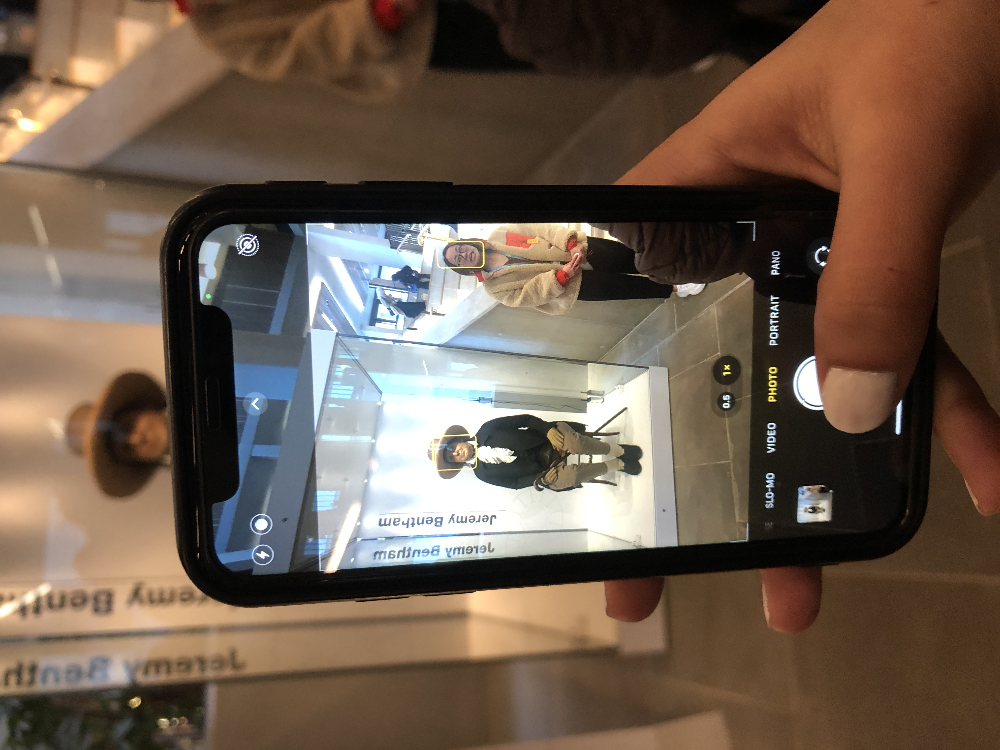
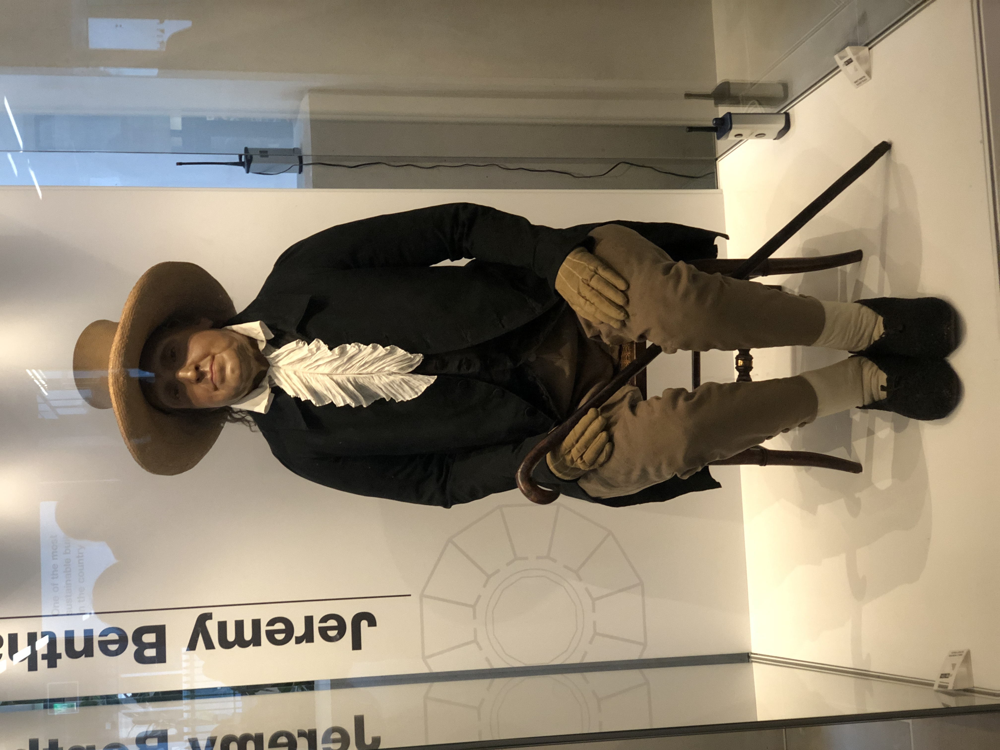

University Programmes

Realising Opportunities
Our first session, how adorable.

Touring UCL!

Hello Jeremy Bentham, preserved since 1832, as per his wishes. Hope he's happy knowing that.

Leaving UCL

Back to Walthamstow for us.

RO Academic Skills Module
Me and my mate knew most of the answers to the Chemistry related questions, probably because we were the only ones who took Chemistry in the room. (This was the aerospace engineering branch afterall)

Doodled away.. oops!

Cool place for them to study.